library(tidyverse)
co2 <- read_csv("data/co2.csv") # one row per country, 2023
co2_trend <- read_csv("data/co2_trend.csv") # one row per country per year, 2018-2023
aid <- read_csv("data/adaptation_aid.csv") %>%
mutate(aid_pc = adapt_aid_musd * 1000000 / population)Choosing and Building a Visualization
POLS 081 · SSQL Workshop guide
Which chart fits which question, how to build a ggplot2 figure layer by layer, and a checklist for a good figure.
NoteWhat you need
This guide uses only the tidyverse (which includes ggplot2) and the data in the data/ folder of the lab files (Part 2 lab materials). Copy any chunk into a .qmd file in your pols081-lab folder and run it.
Load the tidyverse and the data used on this page:
About colors. We use R’s color names, such as "steelblue", "darkorange" and "seagreen". R knows hundreds of them (full list of R color names), and you can use any of them directly in ggplot().
1 Which chart for which question?
The data-paper prompt lists five kinds of question. Each one has a chart that usually answers it best.
| Question type | Ask… | Start with… |
|---|---|---|
| Change | How has X changed over time? | Line chart (geom_line()) |
| Distribution | Who has X? How is it spread out? | Histogram (geom_histogram()) or boxplot |
| Comparison | How do groups differ? | Bar chart of group summaries (geom_col()) or boxplot (geom_boxplot()) |
| Composition | What is X made of? | Stacked or proportional bar (geom_col(position = "fill")) |
| Relationship | Do X and Y move together? | Scatterplot (geom_point()), maybe with geom_smooth(method = "lm") |
1.1 Change: a line chart
A line connects the years in order, so the eye follows the trend. Use it when the x-axis is time.
co2_trend %>%
filter(country %in% c("China", "Germany", "United States")) %>%
ggplot(aes(x = year, y = co2_pc, color = country)) +
geom_line(linewidth = 1) +
geom_point() +
scale_color_manual(values = c("China" = "darkorange", "Germany" = "seagreen",
"United States" = "steelblue")) +
labs(title = "CO2 emissions per person",
x = NULL, y = "Tonnes of CO2 per person", color = NULL,
caption = "Source: World Bank WDI (EDGAR).") +
theme_minimal()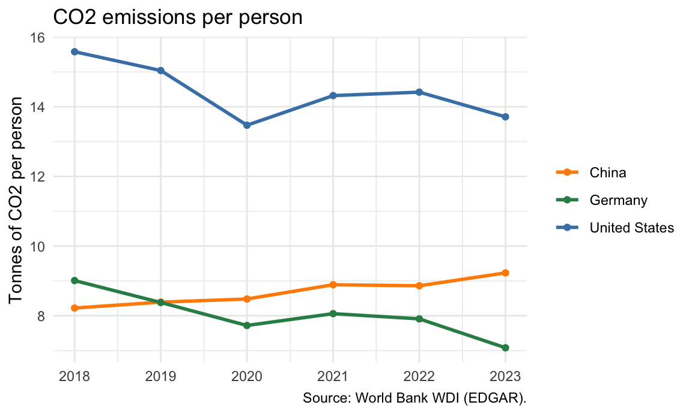
filter(country %in% c(...)) keeps just the countries we want. With more than four or five lines, a chart gets hard to read: pick the cases your question is about.
1.2 Distribution: a histogram (or boxplot)
A histogram sorts countries into bins and counts them, so you can see where most cases sit and how far the tail stretches.
ggplot(co2, aes(x = co2_pc)) +
geom_histogram(binwidth = 2, fill = "steelblue", color = "white") +
labs(title = "CO2 emissions per person, 2023",
x = "Tonnes of CO2 per person", y = "Number of countries",
caption = "Source: World Bank WDI (EDGAR).") +
theme_minimal()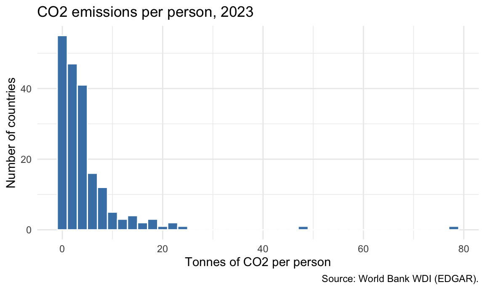
Try a few values of binwidth: too wide hides the shape, too narrow makes it noisy. A boxplot (next section) shows the same spread more compactly.
1.3 Comparison: bars of group summaries, or boxplots
To compare groups, first summarize each group (here, the median), then draw one bar per group. Bar length is easy to compare, so bars must start at zero.
co2 %>%
group_by(income_group) %>%
summarize(median_co2_pc = median(co2_pc)) %>%
ggplot(aes(x = reorder(income_group, median_co2_pc), y = median_co2_pc)) +
geom_col(fill = "steelblue") +
labs(title = "The typical country's CO2 per person, by income group",
x = NULL, y = "Median tonnes of CO2 per person",
caption = "Source: World Bank WDI (EDGAR), 2023.") +
theme_minimal()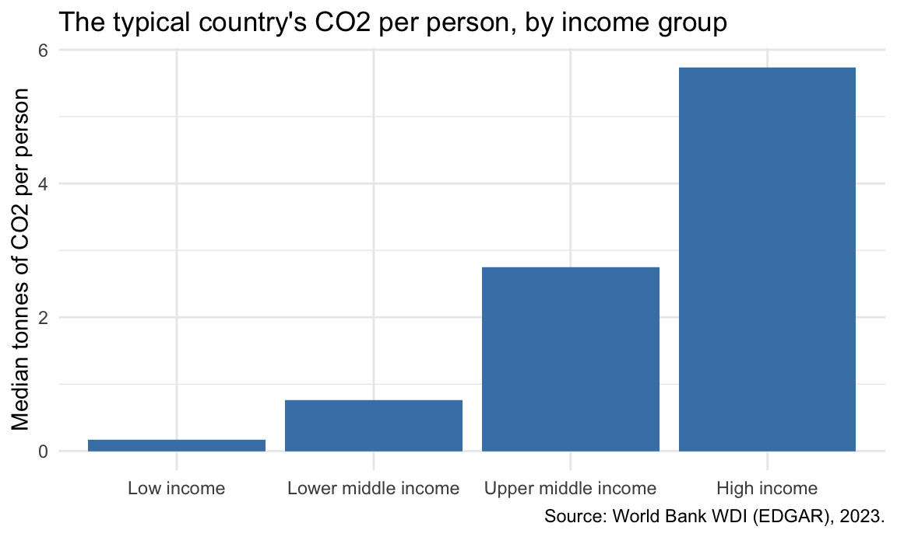
A bar shows only one number per group. A boxplot shows the whole spread in each group: the thick line is the median and the box holds the middle half of the countries.
ggplot(co2, aes(x = reorder(income_group, co2_pc), y = co2_pc)) +
geom_boxplot(fill = "steelblue", alpha = 0.3) +
labs(title = "CO2 per person, by income group",
x = NULL, y = "Tonnes of CO2 per person",
caption = "Source: World Bank WDI (EDGAR), 2023.") +
theme_minimal()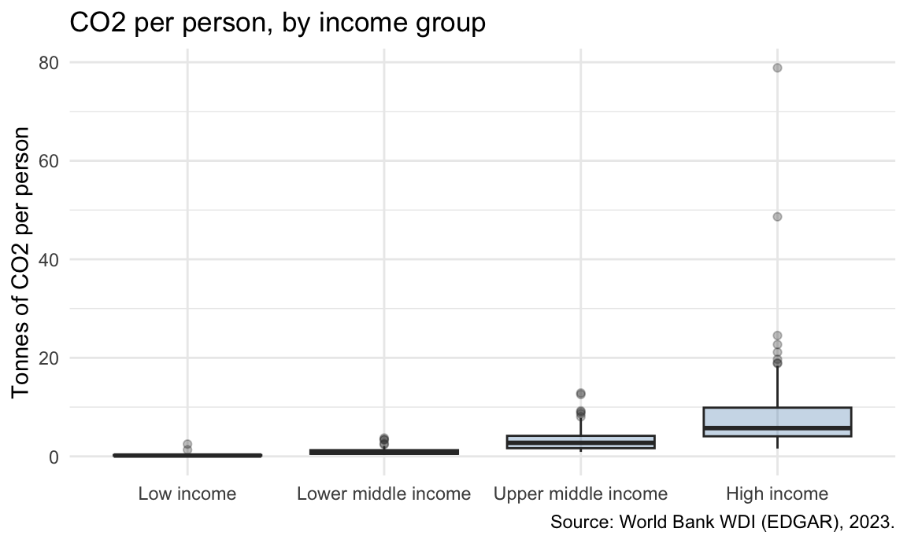
1.4 Composition: a proportional bar
A composition question asks what share of a total each part makes up. Here we compare two totals, the world’s population and its CO2 emissions, split by income group. position = "fill" stretches each bar to 100%, so the segments are shares.
co2 %>%
group_by(income_group) %>%
summarize(Population = sum(population),
`CO2 emissions` = sum(co2_mt)) %>%
pivot_longer(c(Population, `CO2 emissions`),
names_to = "total", values_to = "amount") %>%
mutate(income_group = factor(income_group,
levels = c("High income", "Upper middle income",
"Lower middle income", "Low income"))) %>%
ggplot(aes(x = total, y = amount, fill = income_group)) +
geom_col(position = "fill") +
scale_fill_manual(values = c("Low income" = "seagreen",
"Lower middle income" = "steelblue",
"Upper middle income" = "darkorange",
"High income" = "grey30")) +
labs(title = "Shares of world population and CO2 emissions, 2023",
x = NULL, y = "Share of the total", fill = NULL,
caption = "Source: World Bank WDI (EDGAR).") +
theme_minimal()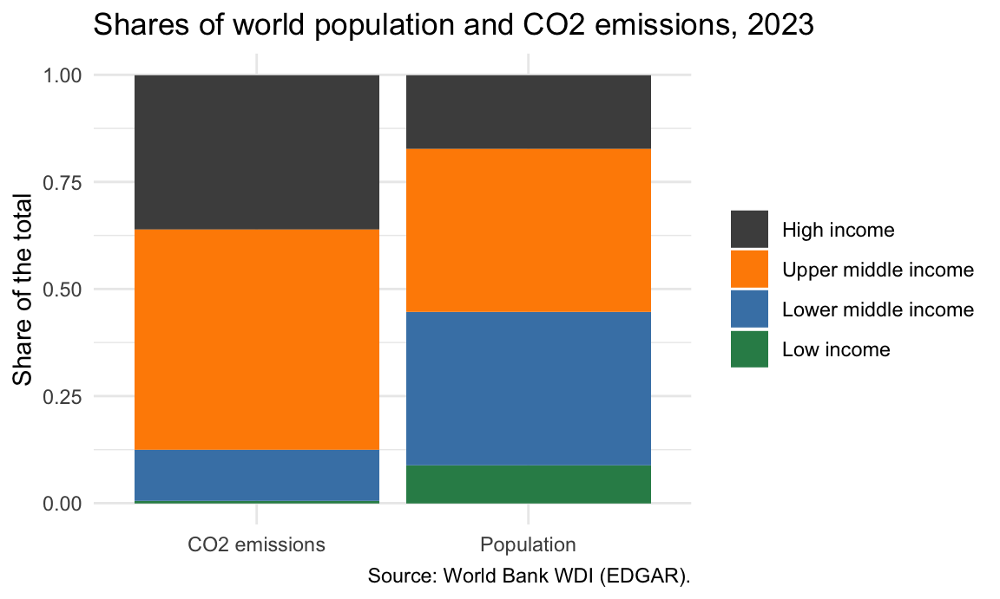
pivot_longer() turns the two total columns into rows, one per income group and total, which is the shape ggplot() needs to stack them. factor() with levels puts the income groups in a meaningful order; otherwise R sorts them alphabetically.
TipWhy not a pie chart?
People judge lengths along a common scale much more accurately than angles or areas. In a pie, slices of similar size are hard to tell apart, and comparing two pies side by side is harder still. A stacked or proportional bar shows the same shares and makes comparisons easy.
1.5 Relationship: a scatterplot
A scatterplot puts one dot per case, with one variable on each axis. It shows whether the two variables move together, and how tightly.
ggplot(aid, aes(x = vulnerability, y = aid_pc)) +
geom_point(color = "steelblue", alpha = 0.7) +
geom_smooth(method = "lm", color = "darkorange") +
scale_y_log10(breaks = c(0.1, 1, 10, 100, 1000),
labels = c("0.1", "1", "10", "100", "1,000")) +
labs(title = "Vulnerability and adaptation aid per person",
x = "ND-GAIN vulnerability (higher = more vulnerable)",
y = "Aid per person, US$ (log scale)",
caption = "Source: OECD Rio markers; ND-GAIN; World Bank.") +
theme_minimal()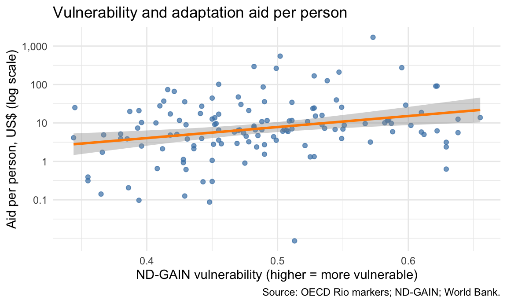
geom_smooth(method = "lm") adds a straight trend line. Remember from Part 1: a relationship is not causation. Confounding, reverse causality and selection can all produce a pattern like this (Part 1 slides: correlation is not causation).
2 Building a plot layer by layer
A ggplot is built in layers, added with +. Here we build Figure 15 one layer at a time, using the adaptation aid data from Example 1 of the lab handout.
2.1 Step 1: an empty canvas
ggplot(aid)ggplot(aid) sets up an empty canvas.
ggplot() says which data to use, but nothing more, so R draws a blank panel. Every plot starts here.
2.2 Step 2: map variables to the axes
ggplot(aid) +
aes(x = vulnerability, y = aid_pc)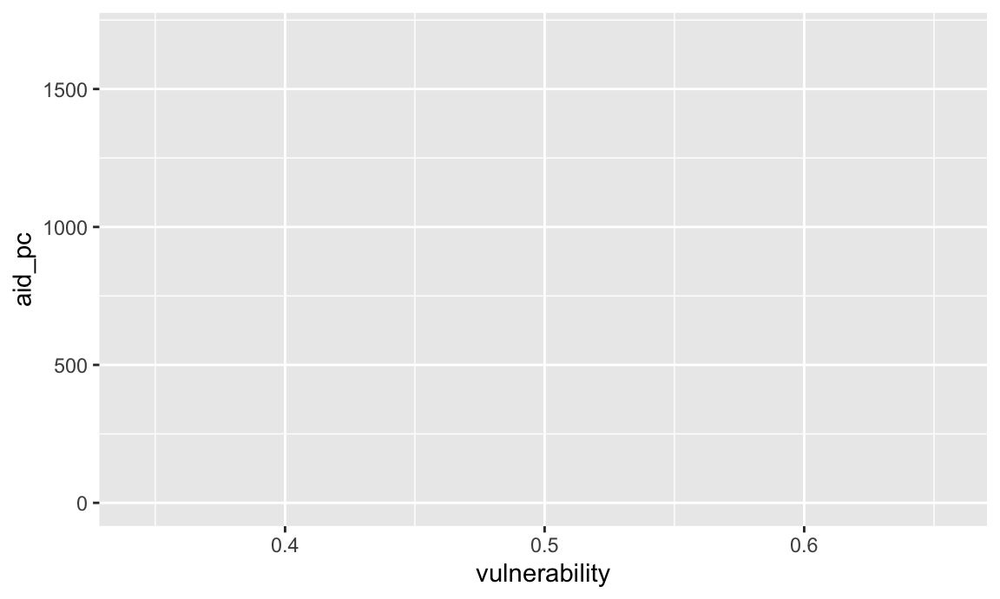
aes() maps variables to the x and y axes.
aes() (short for aesthetics) maps columns to parts of the plot. Now R knows the axes and their ranges, but there are still no marks.
2.3 Step 3: add marks
ggplot(aid) +
aes(x = vulnerability, y = aid_pc) +
geom_point()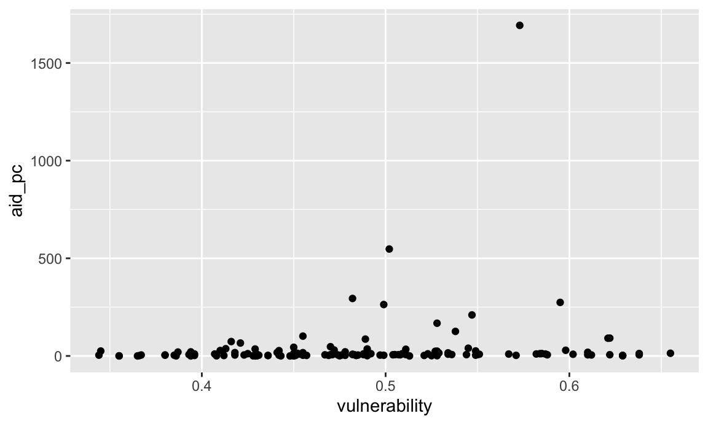
geom_point() draws one dot per country.
A geom_ (geometric object) draws the data. Most dots are squashed at the bottom because a few countries get far more aid per person than the rest. A log scale spreads them out; each gridline is ten times the one below:
ggplot(aid) +
aes(x = vulnerability, y = aid_pc) +
geom_point() +
scale_y_log10(breaks = c(0.1, 1, 10, 100, 1000),
labels = c("0.1", "1", "10", "100", "1,000"))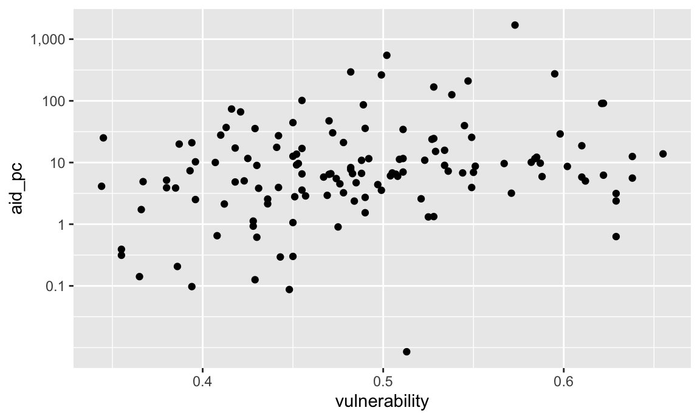
scale_y_log10() spreads out the skewed values.
2.4 Step 4: labels and a source line
ggplot(aid) +
aes(x = vulnerability, y = aid_pc) +
geom_point() +
scale_y_log10(breaks = c(0.1, 1, 10, 100, 1000),
labels = c("0.1", "1", "10", "100", "1,000")) +
labs(title = "Vulnerability and adaptation aid per person",
x = "ND-GAIN vulnerability (higher = more vulnerable)",
y = "Aid per person, US$ (log scale)",
caption = "Source: OECD Rio markers; ND-GAIN; World Bank; UN M49.")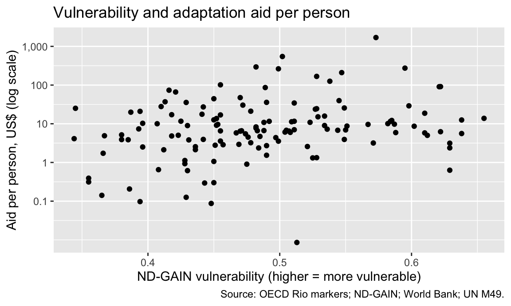
labs() adds a title, plain-language axis labels and a source.
Replace column names like aid_pc with words a reader understands, include units, and say when an axis is logged. The caption is your source line.
2.5 Step 5: color by group
ggplot(aid) +
aes(x = vulnerability, y = aid_pc, color = sids) +
geom_point() +
scale_y_log10(breaks = c(0.1, 1, 10, 100, 1000),
labels = c("0.1", "1", "10", "100", "1,000")) +
scale_color_manual(values = c(Other = "steelblue", SIDS = "darkorange")) +
labs(title = "Vulnerability and adaptation aid per person",
x = "ND-GAIN vulnerability (higher = more vulnerable)",
y = "Aid per person, US$ (log scale)", color = NULL,
caption = "Source: OECD Rio markers; ND-GAIN; World Bank; UN M49.")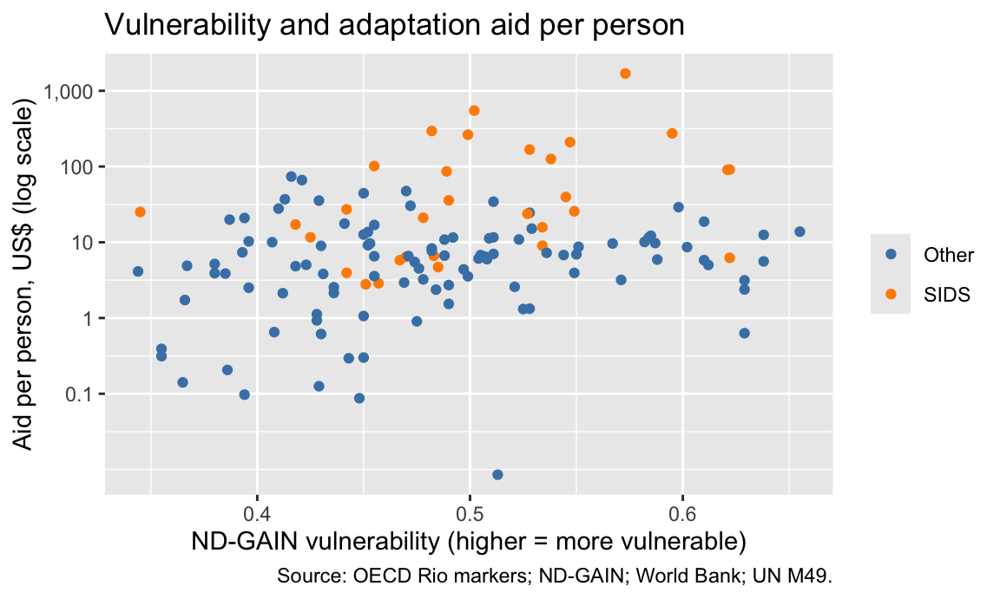
aes(color = sids) colors the dots by group; scale_color_manual() picks the colors.
Putting color = sids inside aes() maps a column to color, so R adds a legend. scale_color_manual() sets which color goes with which group. (To make every dot the same color instead, put color = "steelblue" inside geom_point(), outside aes().)
2.6 Step 6: a trend line
ggplot(aid) +
aes(x = vulnerability, y = aid_pc, color = sids) +
geom_point() +
geom_smooth(method = "lm", se = TRUE) +
scale_y_log10(breaks = c(0.1, 1, 10, 100, 1000),
labels = c("0.1", "1", "10", "100", "1,000")) +
scale_color_manual(values = c(Other = "steelblue", SIDS = "darkorange")) +
labs(title = "Vulnerability and adaptation aid per person",
x = "ND-GAIN vulnerability (higher = more vulnerable)",
y = "Aid per person, US$ (log scale)", color = NULL,
caption = "Source: OECD Rio markers; ND-GAIN; World Bank; UN M49.")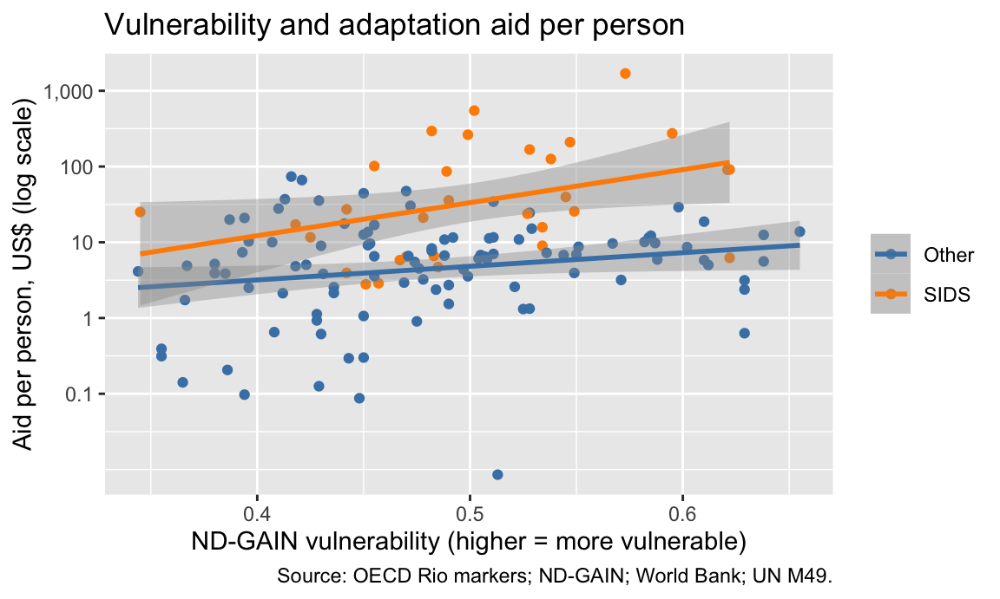
geom_smooth(method = "lm") adds a straight trend line for each group, with a shaded band.
method = "lm" fits a straight line. Because color is mapped to sids, we get one line per group. The shaded band (se = TRUE) is a 95% confidence interval for the line: the range of lines that fit the data about as well. A wide band, like the one for SIDS, means we’re unsure where the line really is, here because there are few SIDS and they are spread out.
2.7 Step 7: a theme
ggplot(aid) +
aes(x = vulnerability, y = aid_pc, color = sids) +
geom_point() +
geom_smooth(method = "lm", se = TRUE) +
scale_y_log10(breaks = c(0.1, 1, 10, 100, 1000),
labels = c("0.1", "1", "10", "100", "1,000")) +
scale_color_manual(values = c(Other = "steelblue", SIDS = "darkorange")) +
labs(title = "Vulnerability and adaptation aid per person",
x = "ND-GAIN vulnerability (higher = more vulnerable)",
y = "Aid per person, US$ (log scale)", color = NULL,
caption = "Source: OECD Rio markers; ND-GAIN; World Bank; UN M49.") +
theme_minimal()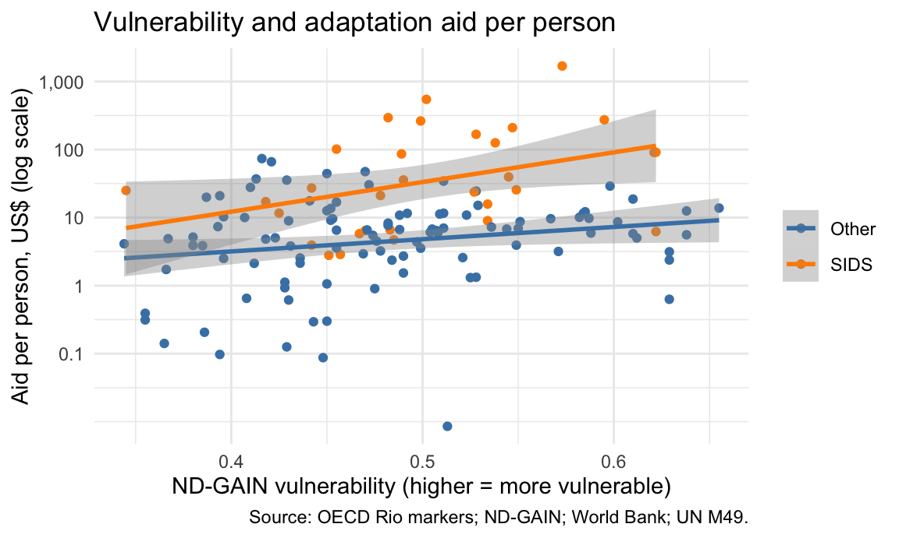
theme_minimal() removes the grey background.
A theme controls the look: background, gridlines, fonts. theme_minimal() is clean and works well in a paper. Others to try: theme_bw(), theme_classic().
2.8 Step 8 (optional): small multiples
ggplot(aid) +
aes(x = vulnerability, y = aid_pc, color = sids) +
geom_point() +
geom_smooth(method = "lm", se = TRUE) +
scale_y_log10(breaks = c(0.1, 1, 10, 100, 1000),
labels = c("0.1", "1", "10", "100", "1,000")) +
scale_color_manual(values = c(Other = "steelblue", SIDS = "darkorange")) +
facet_wrap(~ sids) +
labs(title = "Vulnerability and adaptation aid per person",
x = "ND-GAIN vulnerability (higher = more vulnerable)",
y = "Aid per person, US$ (log scale)",
caption = "Source: OECD Rio markers; ND-GAIN; World Bank; UN M49.") +
theme_minimal() +
theme(legend.position = "none")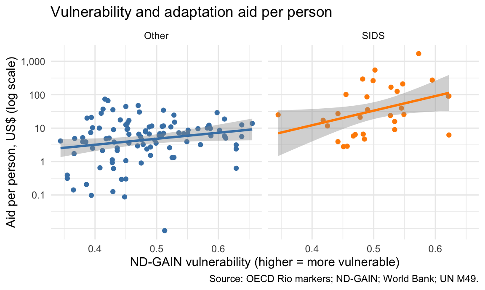
facet_wrap(~ sids) draws one panel per group.
facet_wrap(~ sids) splits the plot into small multiples, one panel per group, with the same axes. That makes each group easier to see when dots overlap. Since the panel titles now name the groups, we hide the legend with theme(legend.position = "none").
2.9 Step 9: save the figure
Inside a Quarto document you don’t need to save anything: the figure appears in your PDF when you render. To use a figure somewhere else (a Word or Google Doc, or slides), store the plot in an object and save it with ggsave():
my_plot <- ggplot(aid) +
aes(x = vulnerability, y = aid_pc, color = sids) +
geom_point() +
scale_y_log10() +
labs(title = "Vulnerability and adaptation aid per person") +
theme_minimal()
ggsave("aid-vulnerability.png", plot = my_plot,
width = 6.5, height = 4, dpi = 300)This writes aid-vulnerability.png into your project folder. width and height are in inches; dpi = 300 makes it sharp enough to print.
TipCross-references
Each figure on this page has a label starting with fig- and a caption, set in the first lines of the chunk:
```{r}
#| label: fig-aid
#| fig-cap: "Vulnerability and adaptation aid per person."
ggplot(...)
```Then write @fig-aid in your text, and Quarto turns it into a numbered link, like this one to Figure 13. Numbers update automatically if you add or move figures.
3 Checklist for a good figure
Before a figure goes in your paper, check that it has: